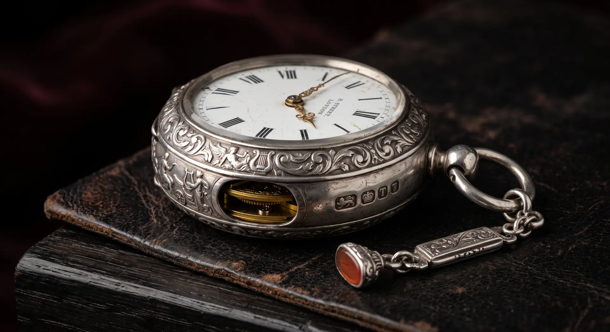

Watches & timepieces
Timepieces Carry Mechanical History as Well as Market Value.
Watches & timepieces assessment, research, collection support and market guidance.

Choose what you need
A Watch Can Be Researched, Valued, Sourced, Sold or Documented as Part of a Family History.
Understand value
Reference, condition, originality and market purpose.
Research a watch
Maker, movement, case, dial and serial relationships.
Find a timepiece
Acquire against a defined reference or collecting brief.
Sell or consign
Prepare the record and choose a credible market.
Preserve its story
Keep box, papers and service history together.

Mechanical history
The Dial is Only the Visible Layer.
Reference, movement, case, dial and hands should form a coherent object. Service work is normal, but replacement parts, refinishing and incomplete records need to be understood rather than hidden.
- Reference Maker, model, case and serial relationships.
- Originality Dial, hands, crown, movement and later parts.
- Condition Case wear, polishing, dial change and function.
- Documentation Box, papers, receipts, service history and provenance.
Research example
Record Before Service Changes the Evidence.
Before a vintage timepiece is opened, cleaned or refinished, photograph the dial, case, engravings and accompanying documents. A clear pre-service record helps distinguish honest maintenance from later alteration and preserves details that may matter to the family or the market.
- 01 Document the visible object
- 02 Review reference and ownership records
- 03 Coordinate specialist inspection where needed
{kind=link}
{kind=link}
Continue from timepieces